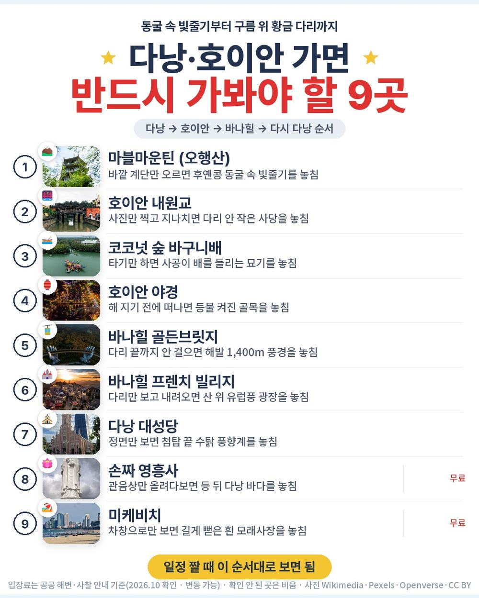
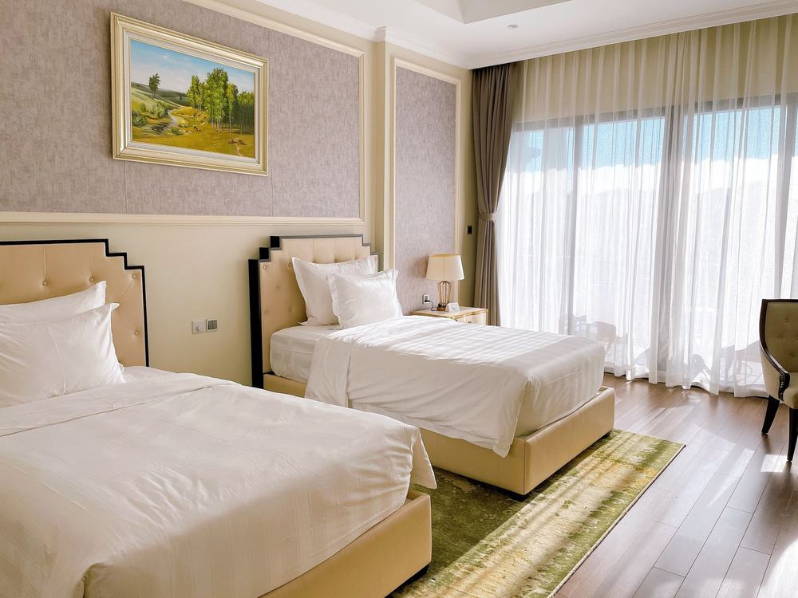

다낭 효도여행 참좋은여행 패키지 여행 51만 9천원, 마사지 두 번에 호이안 밤까지 도는 김해 출발 3박 5일
부산에서 다낭 가는 패키지는 많은데, 전신마사지 2시간과 발마사지 1시간이 둘 다 들고 기사·가이드 경비까지 상품가 안에 있는 건 드묾. 호이안은 낮 구시가지에 밤 씨클로까지 묶여 있어서 따로 골라 봤음.
직접 다녀온 후기가 아니라, 참좋은여행 일정표와 포함·불포함 원문을 하나씩 따져 본 글임.
결론 — 추천. 김해 직항 왕복, 5성급 예정 호텔 세 밤, 바나힐 골든브릿지와 호이안 낮·밤, 마사지 두 번이 한 값에 들었고 선택관광은 없음. 다만 왕복 밤 비행기가 힘든 분은 맞지 않음.
오늘 기준 출발일별 요금 보기
https://naver.me/FCZC1Twj

| 항목 | 내용 |
|---|---|
| 가격 | 1인 519,000원 (성인 · 11월 출발 기준) · 2인 1,038,000원 |
| 여행사 | 참좋은여행 (부산지점) |
| 항공 | 에어부산 직항 · 김해 21:55 → 다낭 01:00 / 다낭 02:00 → 김해 07:55 · 위탁수하물 15kg |
| 숙소 | 5성급 예정 3박 (센터 포인트 다낭 / 윈덤 골든베이 / 멜리아 빈펄 리버프론트 동급 · 2인 1실) |
| 일정 | 3박 5일 · 버스 · 한국어 가이드 · 식사 9회 · 쇼핑 3회 · 선택관광 없음 · 최소 2명 |
▶ 내 출발일 오늘 기준 요금 확인 (제휴 링크 · 예약 시 수수료를 받으며 가격은 같습니다)
▶ 10월 21일 기준 다낭 패키지 최저 27만 9,900원부터 — 출발일별 값 한 화면에: 비교 페이지
| 번호 | 내용 | 한 줄 답 |
|---|---|---|
| 1 | 이 값에 들어 있는 것 | 마사지 2번·유람선까지 |
| 2 | 현장에서 더 낼 돈 | 꼭 낼 돈 0원, 팁은 자율 |
| 3 | 일정과 체력 | 버스 약 6시간, 2일차가 긺 |
| 4 | 자유여행으로 짜면 | 1인 약 91만원 |
| 5 | 맞는 분 · 안 맞는 분 | 김해 출발이 편한 분 |
1. 이 값에 들어 있는 것

51만 9천원에 든 걸 하나씩 세 봄.
- 에어부산 김해–다낭 직항 왕복, 유류할증료·세금 포함
- 5성급 예정 호텔 3박 (2인 1실), 아침 세 번은 호텔 조식
- 식사 9회 — 이름이 적힌 특식은 호이안 전통식과 무제한 삼겹살
관광은 2일차부터 4일차까지 사흘에 나눠 돎.
- 마블마운틴 동굴 · 호이안 바구니배·구시가지·투본강 보트·야간시티투어와 씨클로 · 바나산 케이블카·테마파크·골든브릿지 · 한강 유람선 · 다낭 대성당·한시장·영흥사
- 전신마사지 2시간 + 발마사지 1시간
- 기사·가이드 경비, 최고 1억원 여행자보험
선택관광이 하나도 없음. 현지에서 옵션 값을 따로 고를 일이 없다는 뜻. 쇼핑은 세 번 들름(잡화·커피·침향, 한 곳에 약 1시간). 상품명이 「노팁/노옵션」인데, 쇼핑까지 없는 상품은 아님.

호텔은 세 곳 중 한 곳으로 예정돼 있고, 다 차면 같은 5성급으로 바뀔 수 있음. 방마다 스낵박스나 과일바구니가 하나씩 들어옴. 2일차는 10시, 3일차는 11시에 모여서 새벽 도착 다음 날도 늦잠이 가능함. 수영장이 있는 코이 리조트로 바꾸려면 1인 6만원을 더 내고 담당자에게 따로 물어보면 됨.
2. 현장에서 더 낼 돈
| 항목 | 금액 | 비고 |
|---|---|---|
| 기사·가이드 경비 | 0원 | 상품가에 포함 |
| 선택관광 | 0원 | 목록 없음 |
| 마사지 매너팁 | 자율 | 마사지 전에 가이드가 안내 · 안 내도 불이익 없음 |
| 싱글룸 | 150,000원 | 혼자 방을 쓸 때만 |
| 합계 (2인) | 0원 (반드시 내는 돈) | 상품가 103만 8천원이 곧 두 사람 경비 |
두 사람이면 상품가 103만 8천원에서 반드시 더 나가는 돈이 없음. 매너팁과 쇼핑만 각자 정하면 됨.
3. 일정과 체력

| 일차 | 가는 곳 | 버스 | 걷기 | 점심 · 저녁 |
|---|---|---|---|---|
| DAY 1 | 19:00 김해공항 미팅 → 21:55 출발 → 다낭 01:00 도착 → 호텔 | 약 0.5시간 | 적음 | 석 기내식 |
| DAY 2 | 오전 자유(10:00 미팅) → 마블마운틴·동굴 → 전신마사지 2시간 → 호이안 바구니배 → 구시가지·내원교 → 투본강 보트 → 야간시티투어·씨클로 | 약 2시간 | 중상 | 현지식 · 호이안 전통식 |
| DAY 3 | 오전 자유(11:00 미팅) → 바나산 케이블카·테마파크·골든브릿지 → 발마사지 1시간 → 한강 유람선 | 약 2시간 | 보통 | 현지식 · 무제한 삼겹살 |
| DAY 4 | 체크아웃 → 쇼핑 3곳 → 미케비치 과일·음료 → 다낭 대성당 → 한시장 → 영흥사 → 공항 | 약 1.5시간 | 보통 | 현지식 · 현지식 |
| DAY 5 | 다낭 02:00 출발 → 김해 07:55 도착 | 거의 없음 | 적음 | 없음 |
버스는 5일 동안 약 6시간. 제일 긴 날은 2일차인데, 마블마운틴 계단을 오르고 호이안 골목을 걷는 날이라 걷기도 가장 많음. 그 사이에 전신마사지 2시간이 끼어 있어 한 번 쉬어 감.
4일차는 체크아웃 뒤 밤까지 일정이 이어지고, 새벽 2시 비행기라 숙소가 없음. 대신 2일차와 3일차 오전을 비워 둬서 첫날 새벽 도착을 만회하는 구성임. 마블마운틴은 계단이 있으니 무릎이 불편하신 분은 가이드에게 미리 말해 두면 좋음.
4. 자유여행으로 짜면

| 항목 | 금액 | 근거 |
|---|---|---|
| 김해–다낭 왕복 항공 | 408,000원 | PUS↔DAD 직항 왕복 1인 40만 8천원 (앞으로 두 달 직항 운임 하위 25% 값 · 2026-10-21 마이리얼트립 조회) |
| 5성급 호텔 3박 | 150,000원 | 2인 1실 1인분 (추정) |
| 바나힐 케이블카 입장 | 52,000원 | 1인 (추정) |
| 호이안 투어·바구니배·씨클로·유람선 | 60,000원 | 1인 (추정) |
| 마사지 2회 (2시간 + 1시간) | 60,000원 | 1인 (추정) |
| 식사 (점심 3 · 저녁 3) | 90,000원 | 현지식 기준 (추정) |
| 공항 이동 · 차량 | 80,000원 | 공항 픽업·호이안·바나힐 왕복 2인 나눔 (추정) |
| 여행자보험 · 유심 | 15,000원 | 5일 기준 (추정) |
| 가이드 | — | 자유여행은 없음 |
| 합계 | 약 915,000원 |
혼자 짜면 1인 약 91만 5천원. 패키지는 51만 9천원이라 약 40만원 덜 듦. 항공권값만 빼도 남는 11만원 남짓에 호텔·식사·투어가 다 들어간 셈.
돈보다 큰 차이는 이동. 바나힐은 시내에서 버스로 약 50분, 호이안은 약 30분이라 직접 가면 차를 따로 잡아야 함. 새벽 1시 도착이라 첫날 공항 픽업도 미리 정해 둬야 하는데, 패키지는 가이드가 공항에서 바로 호텔까지 데려다줌.
5. 맞는 분 · 안 맞는 분
| 맞는 분 | 안 맞는 분 |
|---|---|
| 김해에서 바로 떠나고 싶은 부산·경남 분 | 왕복 밤 비행기가 힘든 분 |
| 팁·선택관광 셈이 싫은 분 | 쇼핑센터 방문 자체가 싫은 분 |
| 부모님과 마사지 두 번으로 쉬어 가고 싶은 분 | 호텔 이름을 미리 정해야 하는 분 |
자주 묻는 질문
Q. 다낭 패키지 팁은 따로 내나요?
A. 기사·가이드 경비는 상품가에 들어 있어서 안 냄. 마사지 같은 곳의 매너팁은 자율이고, 금액은 마사지 전에 가이드가 알려 줌. 안 낸다고 불이익은 없다고 원문에 적혀 있음.
Q. 다낭 패키지 쇼핑은 몇 번이에요?
A. 3회. 잡화점, 커피숍, 침향숍이고 한 곳에 약 1시간씩 들름. 4일차 오전에 몰려 있음.
Q. 다낭 패키지 노옵션이면 현지에서 추가로 내는 투어가 없나요?
A. 없음. 선택관광 목록이 비어 있고, 바나힐 케이블카·호이안 야간투어·바구니배·한강 유람선이 다 상품가에 들어 있음.
마무리
김해에서 바로 떠나 다낭·호이안·바나힐을 다 보고, 마사지 두 번으로 쉬어 가는 3박 5일. 밤 비행기 왕복만 괜찮다면 부모님과 처음 다낭 가는 분께 고르기 쉬운 구성임.
값은 출발일마다 달라서, 가시려는 달 요금부터 확인하는 게 순서.
오늘 기준 출발일별 요금 보기
https://naver.me/FCZC1Twj
이 글에는 네이버 제휴 링크가 포함되어 있으며, 링크를 통해 예약하시면 일정 수수료를 받습니다. 가격은 동일합니다. 가격과 구성은 2026년 10월 21일 확인 기준이며 출발일에 따라 달라질 수 있습니다.
▶ 이 상품, 영상으로 보기 (유튜브)
▶ 다낭 패키지 오늘 값 나란히 비교
▶ 같은 목적지 다른 여행사 패키지, 쇼핑·선택관광·가이드 경비까지 비교: pkg-lab.com
사진 출처 (저작자 · 라이선스):
그 밖의 사진: Pexels
쇼츠·클립 영상과 사진:
CHÙA CẦU Ở HỘI AN — BaoQuoc vlogs (YouTube, CC BY) 원본
Hoi An's Glowing Tradition: Lanterns On The River — World Wide Timelapse (YouTube, CC BY) 원본
MARBLE MOUNTAIN DA NANG: Bird's Eye View Drone Tou — Your Da Nang Adventure (YouTube, CC BY) 원본
Grotte Huyen Khong — CC BY 2.0 (Wikimedia Commons) 원본

Boats with lanterns on the Thu Bon river IMG 3864 — CC BY-SA 4.0 (Wikimedia Commons) 원본

4K🇻🇳 🚶WALKING TOUR 호이안 🦽씨클로 투어 HOI AN OLD TOWN CYC — hikangs 4K (YouTube, CC BY) 원본